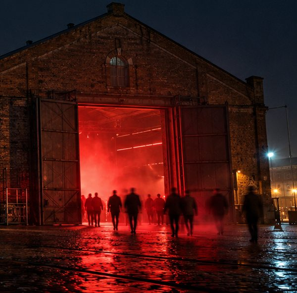
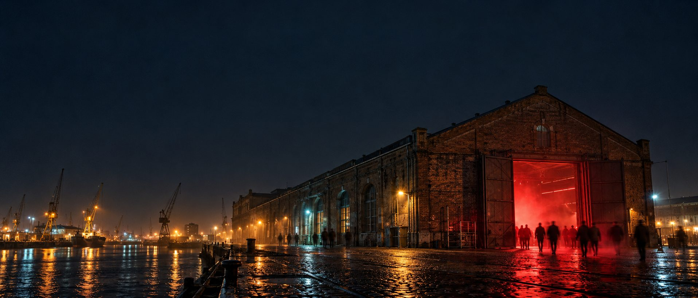
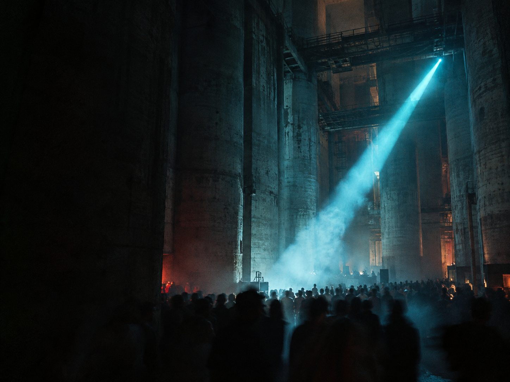
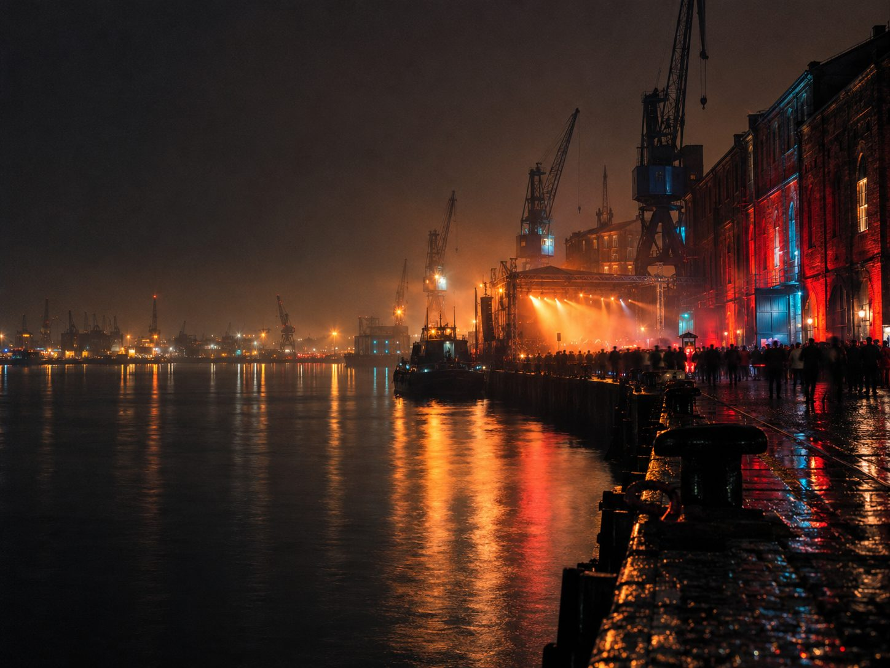

Stage one
Dock
The long brick hall at the end of the quay. The doors stay open all night, and the red spills out onto the cobbles.

Rotterdam, the old port warehouses · Friday to Sunday
Three nights of electronic and experimental music in Rotterdam's old port warehouses. 41 artists on three stages, 22:00 to 06:00.
The stages

Stage one
The long brick hall at the end of the quay. The doors stay open all night, and the red spills out onto the cobbles.

Stage two
A grain-silo hall in bare concrete, taller than it is wide. One beam of cold light, and the haze it cuts through.

Stage three
The open-air stage on the quay edge, with the harbour beside it and the cranes behind. Best at three in the morning.
€65
One night, Friday, Saturday or Sunday. All three stages, doors to close.
€150
All three nights, all three stages. €45 less than three day tickets.
Friday to Sunday, 22:00 to 06:00. A day ticket is €65, the weekend €150.
Buy tickets